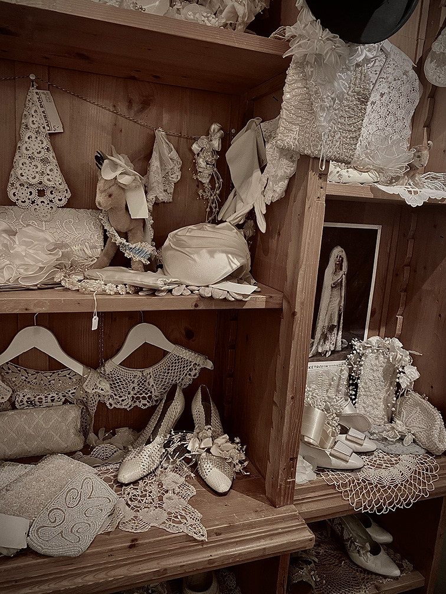
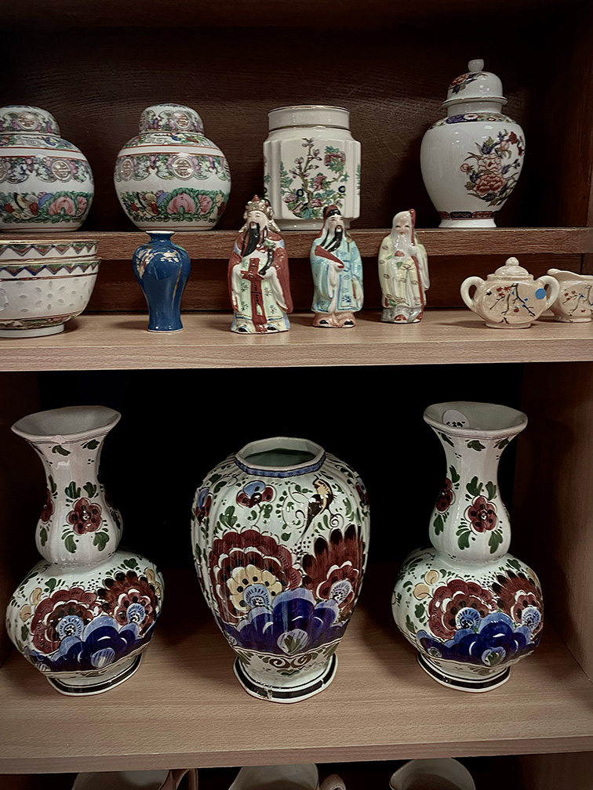
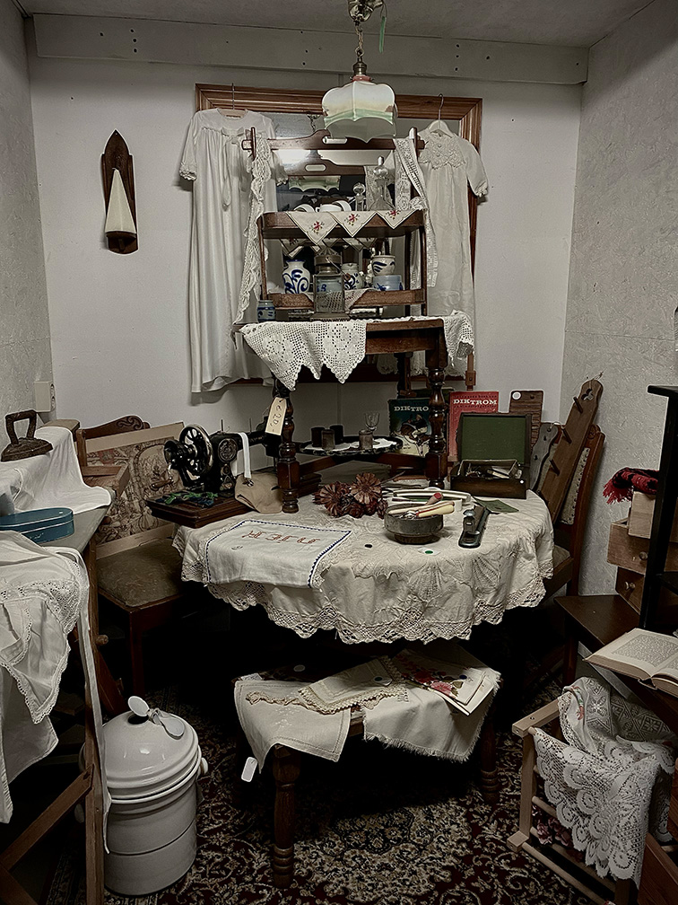
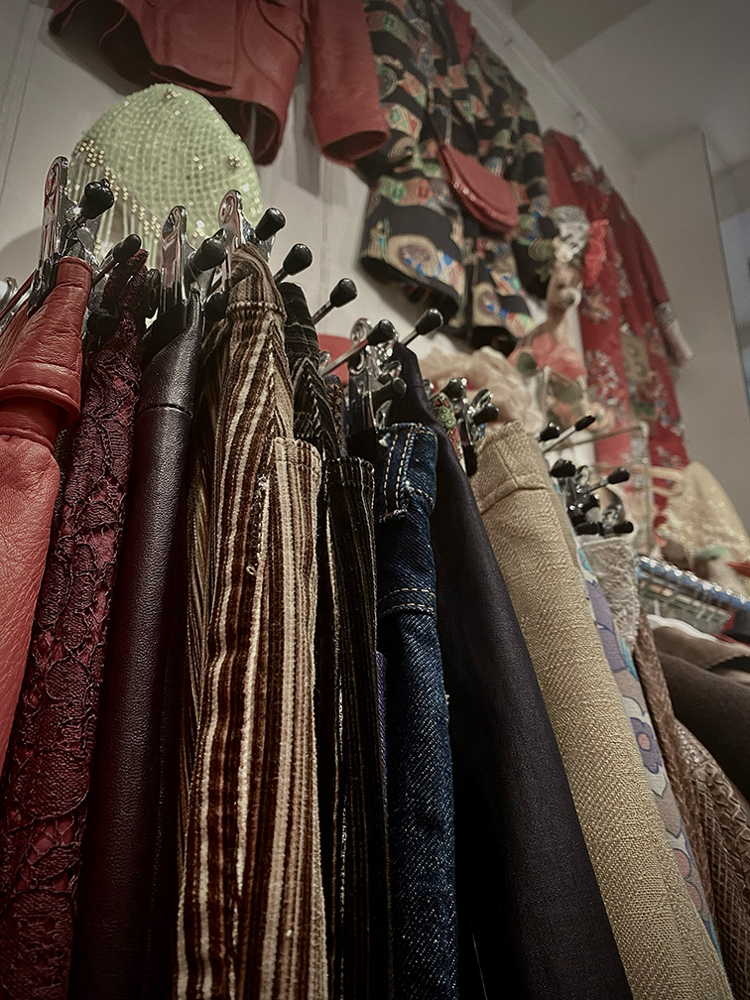
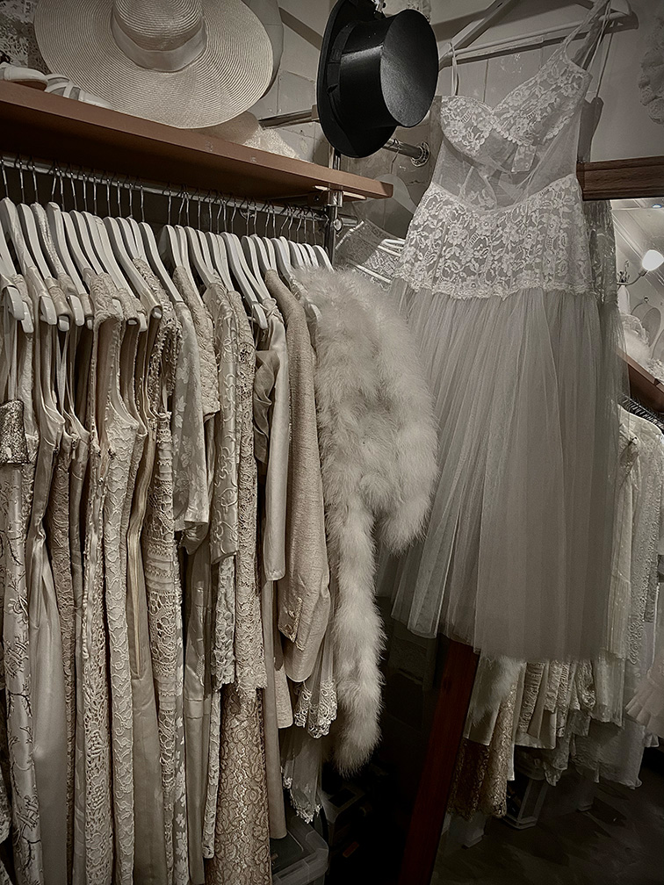
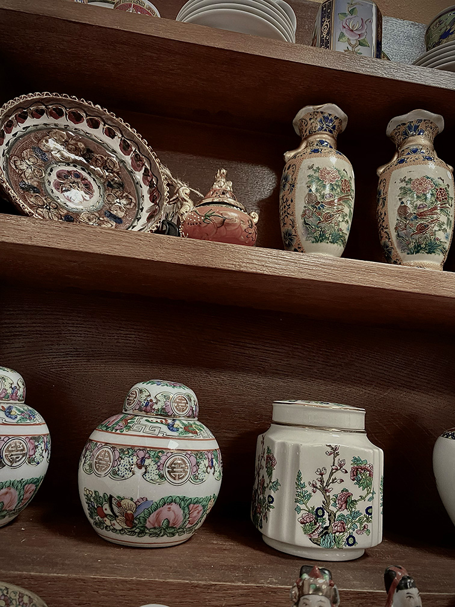

Vintage in eigen omgeving
Woon je nou niet in de buurt van Amsterdam om de leuke winkel Laura Dols te bezoeken en wil je wel graag vintage shoppen, omdat je minder te besteden hebt of, omdat je beter wilt zijn voor het milieu? Niet getreurd hier zijn wat handige tips om leuke winkels te vinden in jou eigen omgeving.


goeden doelen
In mijn eigen omgeving heb ik een goed doel dat heet present. zij hebben ook een vintage winkeltje om geld in te zamelen en kleding voor mensen die het minder hebben te verkopen. Je zou dus zelf kunnen kijken wat voor goedden doelen er zijn in jou omgeving vaak verkopen zij om dit soort redenen ook tweedehands kleding.


Steden in jou omgeving
De meeste steden hebben allerlei leuke vintage winkels. Dus het is zeker niet verkeerd om is een vintege shop spot wandeling te maken in steden bij jou in de buurt. Wie weet spot je wel een hele leuke vintage winkel.


Google maps
De meest simpele manier om vintage winkels te vinden is met google maps. het enige wat je dan hoeft te doen is vintage of tweedehands winkel in te typen en dan filtert maps het op jou locatie uit.